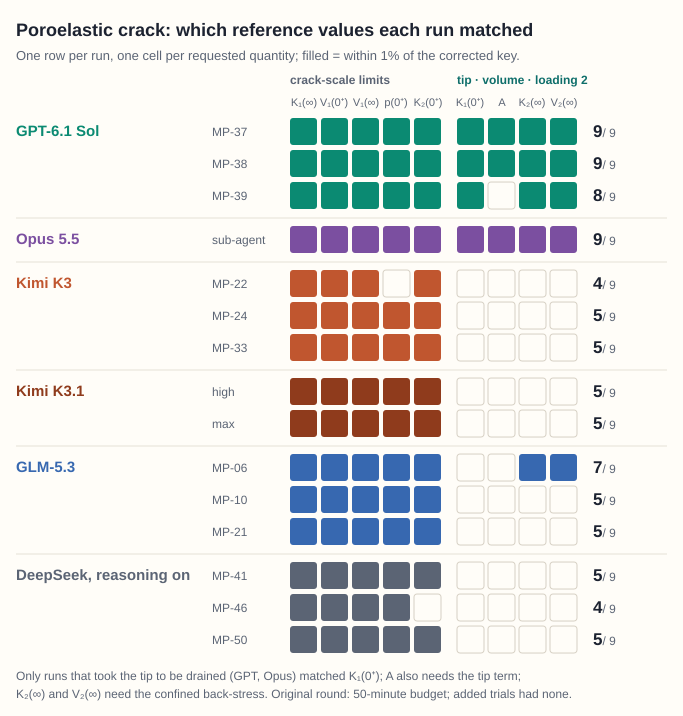

How AI agents and mechanics can work together, with every result checked against an independent reference or
a measurement.
Featured case · Level 1 · Fracture mechanics
Drained at the tip, undrained at the crack
A crack in a fluid-saturated solid is loaded suddenly. At the crack scale the solid has no time to drain, but within
√(ct) of each tip it drains at once. The task asked for the tip intensity just after loading without saying which
limit comes first; the key takes the tip limit first, which gives the drained value, 0.808 times the crack-scale value,
and gives partial credit for the crack-scale value itself.
Of the fifteen runs shown, thirteen matched all five crack-scale values. Only GPT, in three of three runs,
and Opus 5.5, in one, found the drained-tip value; the other eleven gave the crack-scale value, which the key credits in
part.

Each row is one saved run, October 2026; a filled cell is a value within 1% of the corrected key (0.01
absolute for K₂(0⁺), whose key value is 0). Key and checker as corrected on 26 October 2026; the case page,
with the task, the key and every saved answer, will be linked here. Not shown: three DeepSeek runs with reasoning off,
which matched two or three of the nine values and missed the drained-tip value.
Three levels
1
Classical problems
Analysis problems with known answers, from published papers. The agent derives and computes the asked quantities.
Open questions without a published answer, judged against measurements. This is the aim.
First casesPlanned
Results are dated. As AI agents improve, newer agents are run on the same cases, so the record shows how
far up the levels they reach. Errors are reported as well as successes.
How every result is checked
Each case restates a published problem as a self-contained task. The agent's answer, or the code it writes, is compared with
an independent reference that the agent never sees. A person asks what each mismatch means before calling it a failure, and
separates the agent's errors from errors in our own checks.
Published problema model or an analysis from a paper
Self-contained taskrestated with its parameters
AI agentderives, computes or writes code
Host or checkerruns the code or reads the answer
Scorercompares the results
Independent referencenot shown to the agent
Element benchmarks
Rock fracture: a gradient-damage user element
Agents write an Abaqus/Standard user element (an 8-node brick with displacement and damage) for the gradient-damage
rock model of L. Anand (2026), tested on the one-element compression test of the paper's Fig. 17.
Status
Case study shared with the source-paper author on 4 Nov 2026; release pending.
Agents write an Abaqus/Standard user element (a 4-node quadrilateral with displacement, lithium concentration and
damage) for the battery fatigue model of N. Noii et al. (2024) and its FEniCS implementation. The same agent built the
element three times: without our code-generation framework abaqus_ufl,
with it and a team of sub-agents, and with it as a single agent. All three elements were robust; two predicted too much
damage.
Status
Released on 6 Nov 2026: the task, host, scorer, reference code, the three runs and their results.
An element benchmark starts from a published model and a test problem, from the source paper or our own. The independent reference, the hidden
problems and the tolerances are fixed before any agent runs, and the host and scorer are first tested on known-good and
known-wrong elements. The steps.
Evaluation policy
Hidden tests for future rounds stay private. Every published verdict will point to its evidence and to the evaluation
version that produced it (a featured result may appear before its case page, with its key and checker versions), and case
studies separate errors of the agents from errors of our own test programs.
The policy.